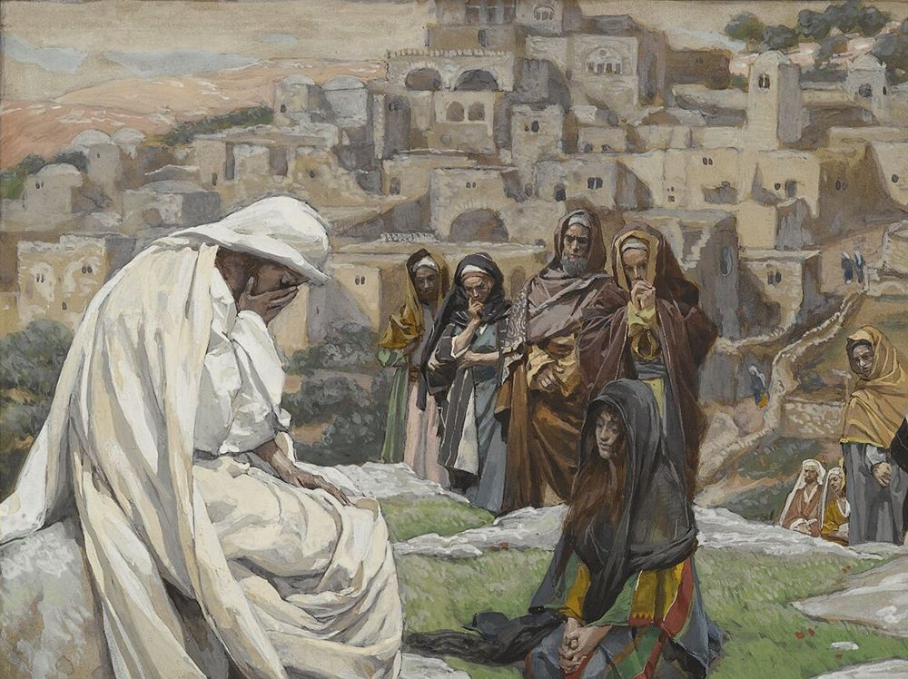
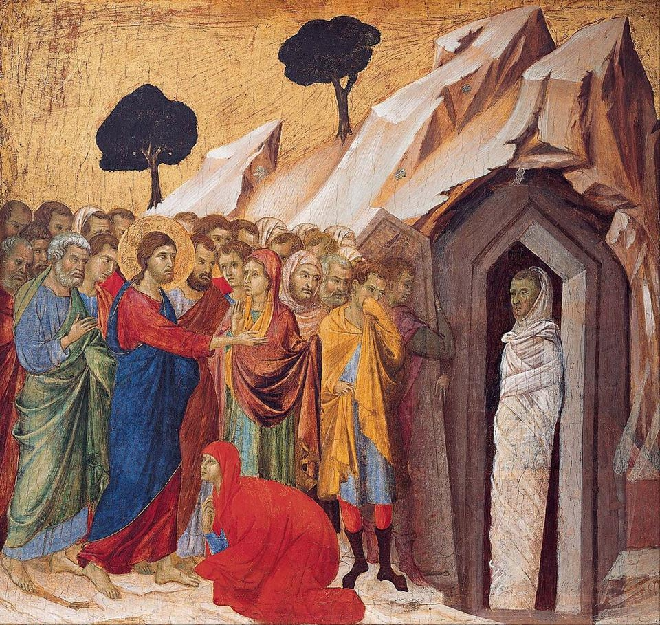
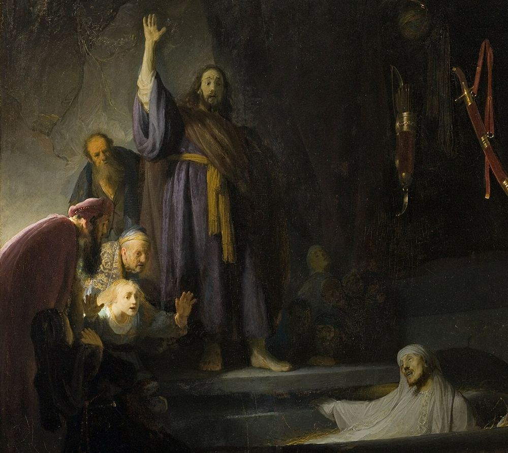

John 11
I am the resurrection
Jesus waits, weeps at a grave, and calls a man four days dead to come out.
Things to watch for
Keep these questions in the back of your mind as we read. We'll come back to every one of them at the end.
- Who Jesus isWhat does Jesus claim to be at Lazarus' grave?
- God's timingWhy did Jesus wait two days when his friend was dying?
- GriefWhat does Jesus do with our grief?
- HopeIs anyone too far gone for Jesus?
- Set freeWhat did Jesus tell the people to do for the man he raised?
- The crossWho did Jesus die for?
Part one
He whom thou lovest
Verses 1–16
Bad news from Bethany, and Jesus doesn't come.
A family Jesus loved
This was a home where Jesus stayed and ate (Luke 10:38). Verse 2 points ahead to John 12, where Mary pours perfume on his feet.
Look at the message. The sisters don't tell Jesus what to do. They just tell him who is hurting, and they lean on his love: “he whom thou lovest.” That's a good way to pray.
He loved them, so he waited
- Day 1The sisters send wordLazarus dies, probably
- Day 2Word reaches Jesus. He stays.
- Day 3He stays.
- Day 4He walks to Bethany“four days already” (v. 17)
Read verses 5 and 6 together: Jesus loved them, therefore He stayed put. His delay wasn't neglect. It was love with a bigger plan.
Work out the days, and Lazarus probably died about the time the message reached Jesus. Leaving right away wouldn't have saved him. Jesus wasn't too late. He was planning something far better than a healing.
When God seems slow, it doesn't mean he doesn't care. “For the glory of God” (v. 4): he's working on something you can't see yet.
Twelve hours in the day
The disciples were scared. Judaea was where men had just picked up stones to kill Jesus (John 10:31).
Jesus answers with a picture: a man who walks in daylight doesn't trip. His day was set by his Father, and nobody could cut it short. Until his hour came, he was safe doing the Father's will.
The same is true for you. The safest place to be is where God sends you, even if it looks dangerous.
Asleep
The New Testament keeps using this word for believers who have died:
“For if we believe that Jesus died and rose again, even so them also which sleep in Jesus will God bring with him.”
1 Thessalonians 4:14
For a believer, death is real, but it isn't the end of the story. It's sleep, and there is a morning.
Thomas's Greek nickname. Most people remember him as “doubting Thomas” from John 20.
But look at him here. He thinks going back to Judaea means dying, and he goes anyway: “Let us also go, that we may die with him.” That's loyalty, even when he's gloomy about it.
Nobody is just their worst moment. Jesus knew Thomas's courage and his doubts, and he kept both.
Part two
The resurrection and the life
Verses 17–37
Two grieving sisters, and Jesus' tears.
Close to Jerusalem
Bethany sat on the far side of the Mount of Olives, close enough that “many of the Jews” walked out from Jerusalem to mourn with the family.
That matters. This miracle won't happen out in the country. It will happen in front of a crowd from the capital, and word will reach the leaders fast (v. 46).
Same words, two sisters
Martha
gets up and goes to meet him on the road (v. 20)
Mary
stays in the house, then falls at his feet (vv. 20, 32)
“Lord, if thou hadst been here, my brother had not died.”
To Martha, Jesus gives teaching: “I am the resurrection.”
To Mary, Jesus gives tears: “Jesus wept.”
Both sisters said the hard thing out loud, straight to his face. He didn't scold either one. Jesus can take your honest “Lord, where were you?” And he gives each person what they need.
I am the resurrection, and the life.
Martha believed in a resurrection someday, at the end of the world. Jesus moves it from a day to a Person. Resurrection isn't just something that will happen. It's Someone standing in front of her.
This is the fifth of seven “I am” sayings in John:
- The bread of life6:35
- The light of the world8:12
- The door10:9
- The good shepherd10:11
- The resurrection, and the life11:25
- The way, the truth, and the life14:6
- The true vine15:1
Two promises
The believer who dies
“yet shall he live”
His body will be raised. The grave doesn't get the last word.
The believer who is alive
“shall never die”
The real him, the life God gave him, never dies. Not for a moment.
“And I give unto them eternal life; and they shall never perish, neither shall any man pluck them out of my hand.”
John 10:28
The Greek word was used of a horse snorting. It's a deep, angry groan. Jesus is standing face to face with death, the enemy that has wrecked this family, and he is angry at it.
He's not annoyed at the mourners. He's furious at what sin and death do to people he loves. And he's about to do something about it.

Jesus wept.
The shortest verse in the Bible. Jesus knew that in a few minutes Lazarus would walk out alive. He cried anyway.
Tears aren't weakness, and they aren't a lack of faith. Lots of us were taught to stuff our grief or drown it. The Son of God stood at a grave and wept out loud.
“For we have not an high priest which cannot be touched with the feeling of our infirmities; but was in all points tempted like as we are, yet without sin.”
Hebrews 4:15
Whatever you're grieving, a person, years lost, a family torn up, he doesn't stand at a distance. He weeps with you.
Part three
Come forth
Verses 38–44
The stone is moved, and a dead man answers.

“He stinketh”
Tombs were often caves cut into the rock, closed with a big stone. After four days in that heat, Martha knew what was behind it. No one could pretend Lazarus was just unconscious.
Jesus could have moved the stone with a word. He told them to do it. We roll away the stone: we show up, we stop hiding, we let him in. Only he can give life.
Some of us have things behind a stone that we're sure stink too bad to open. Jesus still says, “Take ye away the stone.”

A dead man hears
Jesus prays out loud, so the crowd will know who sent him. Then he shouts three words into a grave.
And a man four days dead walks out, still wrapped up hand and foot. Dead men can't hear, but they hear Him.
This is the seventh sign in John, the biggest one. It's also a preview. One day every grave will hear his voice (John 5:28). And right now, he still speaks life into people the world has written off.
Loose him, and let him go
Lazarus was alive, but he was still wrapped in the clothes of the grave, his face covered with a cloth (the “napkin”). He couldn't get them off by himself.
Only Jesus gives life. But then he turns to the people standing there and says, you unwrap him.
That's what this group is for. You can be alive in Christ and still be tangled in the old life. We help each other get loose.
“Bear ye one another’s burdens, and so fulfil the law of Christ.”
Galatians 6:2
Part four
One man for the people
Verses 45–57
Life for Lazarus means a death plot for Jesus.
Weighed, and found wanting
The “council” was the ruling court of the Jews. Rome let them keep their power as long as there was no trouble.
They don't deny the miracle: “this man doeth many miracles.” They just weigh it against their position, and their position wins.
People rarely reject Jesus for lack of evidence. More often it's what following him would cost. What's sitting on your side of the scale?
Caiaphas said more than he knew
John says the high priest “prophesied” without knowing it. God used a wicked man's words to say the gospel out loud. And not only for Israel: for scattered people everywhere who will believe, Jews and Gentiles alike.
“For Christ also hath once suffered for sins, the just for the unjust, that he might bring us to God, being put to death in the flesh, but quickened by the Spirit:”
1 Peter 3:18
The last sign, and the cross
- Water to wineJohn 2
- An official's son healedJohn 4
- A lame man walksJohn 5
- Five thousand fedJohn 6
- Walking on the seaJohn 6
- A blind man seesJohn 9
- Lazarus raisedJohn 11
The seventh sign is the one that sets the cross in motion. Jesus gives Lazarus life, and it costs him his own.
He pulls back to Ephraim, a town near the wilderness, probably about 12 miles northeast of Jerusalem. Meanwhile the crowds head up early for Passover, to “purify themselves” with the washings the law required (Numbers 9:6–10).
Everyone is getting ready for the Passover. Nobody yet sees that the true Passover Lamb is the One they're hunting.
Points to remember
- Who Jesus is“I am the resurrection, and the life” 11:25Resurrection isn't just a day on the calendar. It's a Person, and whoever believes in him lives.
- God's timing“Jesus loved Martha … he abode two days still” 11:5–6His delays are love with a bigger plan, for the glory of God.
- Grief“Jesus wept” 11:35He doesn't stand at a distance from our pain. He weeps with us.
- Hope“He that was dead came forth” 11:44Four days dead and stinking isn't too far gone for Jesus. Neither are you.
- Set free“Loose him, and let him go” 11:44Jesus gives life. Then he calls us to help each other out of the grave clothes.
- The cross“One man should die for the people” 11:50Jesus died in our place, for anyone, anywhere, who will believe.
Question 1 of 6
Who Jesus isWhat does Jesus claim to be at Lazarus' grave?
What verses tell us about this?
Answer
He claims to be the resurrection and the life himself. Whoever believes in him will live even after dying, and the life he gives never ends. Then he proved it by calling Lazarus out of the grave. Martha's answer is the right one: “I believe that thou art the Christ, the Son of God.”
Question 2 of 6
God's timingWhy did Jesus wait two days when his friend was dying?
What verses tell us about this?
Answer
Because he loved them and had something better in mind than a healing. He waited so that God would be glorified and so that his disciples, and the sisters, would believe. A delay from God isn't a no, and it isn't neglect. He is working on more than we can see.
Question 3 of 6
GriefWhat does Jesus do with our grief?
What verses tell us about this?
“For we have not an high priest which cannot be touched with the feeling of our infirmities; but was in all points tempted like as we are, yet without sin.”
Hebrews 4:15
Answer
He enters into it. He let both sisters say their hard words, he groaned at death, and he wept, even knowing he was about to raise Lazarus. He's not embarrassed by our tears, and he doesn't rush us past them. He feels it with us, and then he brings life.
Question 4 of 6
HopeIs anyone too far gone for Jesus?
What verses tell us about this?
Answer
No. Lazarus wasn't sick or close to death. He was four days dead, and even his sister said it was too late. Jesus called him out anyway. Whatever your past looks like, however long it's been, his voice reaches further than the grave.
Question 5 of 6
Set freeWhat did Jesus tell the people to do for the man he raised?
What verses tell us about this?
“Bear ye one another’s burdens, and so fulfil the law of Christ.”
Galatians 6:2
“Confess your faults one to another, and pray one for another, that ye may be healed. The effectual fervent prayer of a righteous man availeth much.”
James 5:16
Answer
“Loose him, and let him go.” Jesus gave the life; the people around Lazarus took off the grave clothes. New life in Christ is his work alone, but getting free of the old habits takes brothers who will help, pray, and stick with you.
Question 6 of 6
The crossWho did Jesus die for?
What verses tell us about this?
“For God so loved the world, that he gave his only begotten Son, that whosoever believeth in him should not perish, but have everlasting life.”
John 3:16
Answer
For the people, in their place. Caiaphas meant it as politics, but God meant it as the gospel: one innocent Man dying for the guilty. And not for one nation only, but for people scattered everywhere. “Whosoever believeth” includes you.
Prayer requests
What can we pray about for you today?
“Casting all your care upon him; for he careth for you.”
1 Peter 5:7